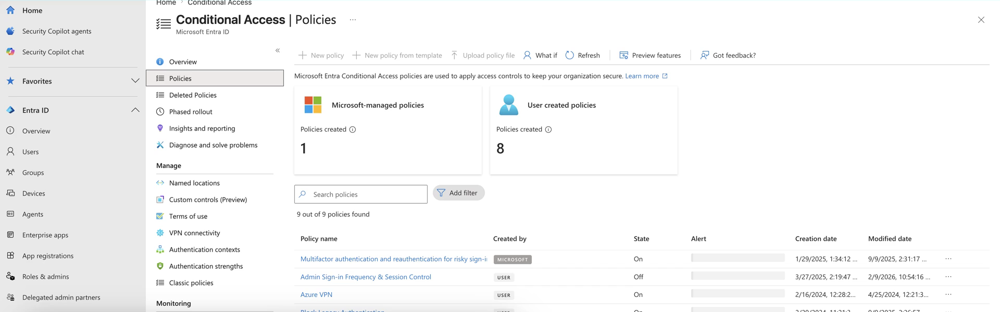
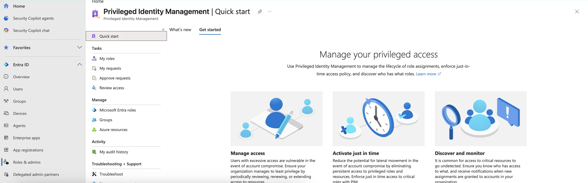

AZ-500 / SC-100 · FOUNDATIONS
Zero Trust
Strategy
Never trust, always verify. The strategy that every other Microsoft security framework operationalizes — three principles, seven pillars, one adoption journey.
VERIFY EXPLICITLY → LEAST PRIVILEGE → ASSUME BREACH
The three principlesNETWORK INTELLIGENCE · FOUNDATIONS
The exam's anchor — memorize these
Trust by exception, not by default
1
Verify explicitly
Authenticate and authorize every request using all signals — identity, device health, location, behavior, risk. Continuously.
→
2
Least-privilege access
Only the access needed, for the shortest time — just-in-time, just-enough-access. Humans and workloads alike.
→
3
Assume breach
Design as if the attacker is already inside — segment, minimize blast radius, verify end-to-end, detect fast.
Not a product. Zero Trust is a strategy realized through many controls — and verification is continuous, never one-time at login.
Verify explicitly · in practiceNETWORK INTELLIGENCE · FOUNDATIONS
Where principle one becomes a control
Every sign-in, evaluated on signals
Grounded · AZ-500 · Entra Conditional Access
Conditional Access is verify-explicitly
Each policy evaluates identity, device state, location, and risk at sign-in, then grants, blocks, or steps up. Verification is continuous — paired with Continuous Access Evaluation, not a single gate.
This is principle one made operational in the Identities pillar.
portal.azure.com — Microsoft Entra Conditional Access

The technology pillarsNETWORK INTELLIGENCE · FOUNDATIONS
The architecture map — six assets, one integrator
Apply the three principles, pillar by pillar
Identities
The access decision itself
Endpoints
Device health & compliance
Data
Classify, label, encrypt
Apps
App & API access controls
Infrastructure
Harden compute & services
Network
Segment, stop lateral movement
SECOPS — VISIBILITY, AUTOMATION & ORCHESTRATION
THE 7TH PILLAR STITCHES SIGNALS FROM ALL SIX
How an architect adopts itNETWORK INTELLIGENCE · FOUNDATIONS
Reason top-down, then sequence the work
Why → what → where, then quick wins
portal.azure.com — Microsoft Entra Privileged Identity Management

Grounded · AZ-500 · Entra PIM
Least privilege, sequenced by adoption
Business scenarios set the why, security disciplines the what, the seven pillars the where. PIM is the canonical least-privilege win — eligible, time-bound, MFA-gated access.
RaMP supplies the quick-win checklists to start moving — covered next module.
The connective tissueNETWORK INTELLIGENCE · FOUNDATIONS
The question SC-100 Domain 1 loves
Zero Trust is the strategy; the rest operationalize it
- Zero Trust — the strategy and principles. The why behind every control.
- MCRA — the reference architecture: Zero Trust drawn across the whole estate.
- MCSB — the prescriptive checklist you measure against in Defender for Cloud.
- Azure WAF (Security pillar) — Zero Trust applied at the workload-design level.
- CAF (Secure) — Zero Trust across the cloud-adoption journey and landing zones.
RememberNETWORK INTELLIGENCE · FOUNDATIONS
Zero Trust in five rules
The strategy that anchors everything
- 1 · One idea: never trust, always verify — and verification is continuous.
- 2 · Three principles: verify explicitly, least privilege, assume breach.
- 3 · Seven pillars — six assets plus SecOps as the integrating seventh.
- 4 · Adopt top-down: business scenarios → disciplines → pillars, then RaMP.
- 5 · Zero Trust is the strategy; MCRA the picture, MCSB the checklist, WAF the workload lens, CAF the journey.
Hands-on · 1 of 2NETWORK INTELLIGENCE · FOUNDATIONS
Do this
Map your tenant to the three principles
GOAL · Turn the principles into a control-and-gap inventory
- Verify explicitly — name one control you have and one gap. Conditional Access plus MFA coverage?
- Least privilege — PIM eligible-not-standing, access reviews? Where is standing access still live?
- Assume breach — network segmentation and Defender alerts? What is unmonitored?
✓ DONE WHEN · Each principle has one named control and one named gap
Hands-on · 2 of 2NETWORK INTELLIGENCE · FOUNDATIONS
Do this
Draw the maturity grid
GOAL · Produce a one-page Zero Trust snapshot
- Score one pillar first — pick Identities. Rate 1 to 5 on explicit verification, least privilege, and assume-breach.
- Write down the single highest-leverage fix that score reveals.
- Then draw the grid: three principles across, seven pillars down; mark each cell red, amber, or green.
✓ DONE WHEN · You hold a one-page grid that doubles as an SC-100 design artifact